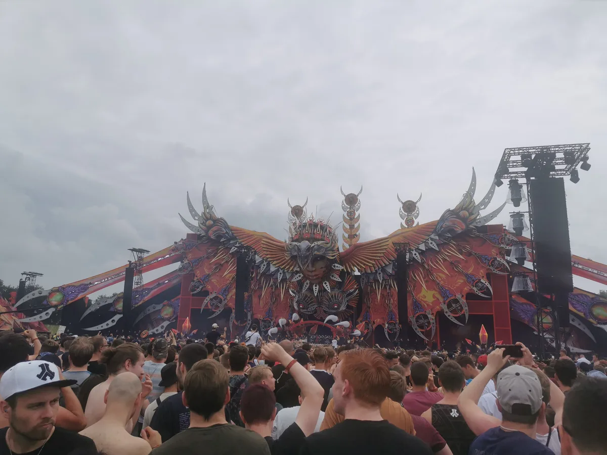
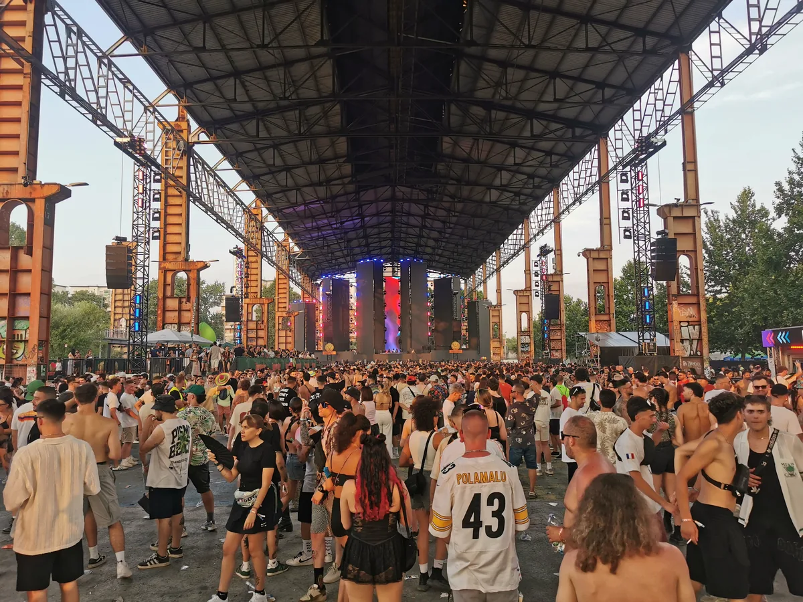
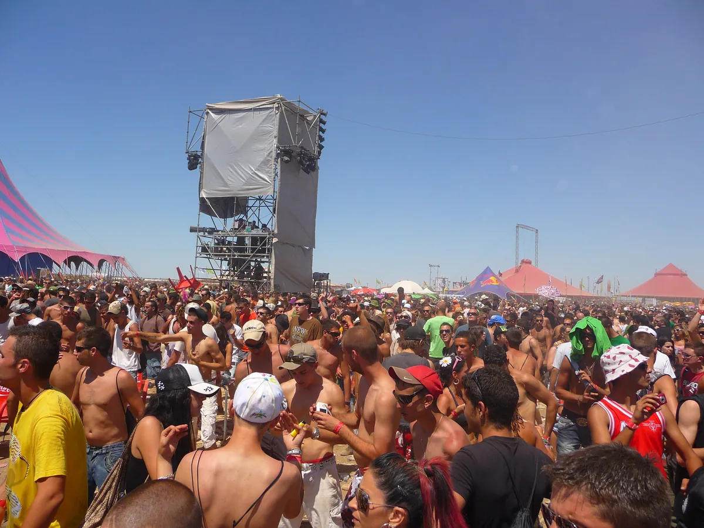
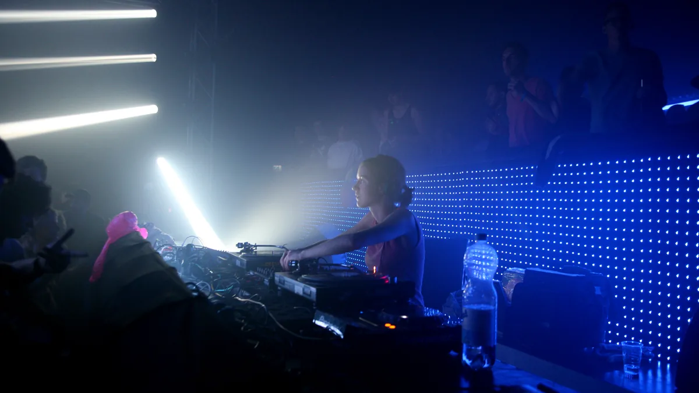

Festival guide, 2027
The best electronic music festivals in Europe in 2027
Fourteen major festivals and seven smaller ones, compared by what they play, how big they are, where you sleep and when they are, with the 2027 dates that are confirmed and the ones that are not.
A list meant for choosing.
Europe has more electronic music festivals than anyone could list, and most "best of" pages are lists of the famous ones with a photograph each. This one is meant to help you choose: what each festival actually plays, how big it is, where you sleep, when it is in 2027, and who it suits.
Every date below was checked on the festival's own site on 22 September 2026. Where a festival has not announced its 2027 dates yet, the table says so rather than guessing from previous years, and this page is updated as dates are confirmed.
How this list was chosen.
A festival is on this list when all four of these are true:
- Electronic music is the core of the programme, not one stage among rock and pop headliners.
- It appears in DJ Mag's Top 100 Festivals for 2026, a readers' poll. That is not a verdict on quality, but it shows the festival has a real international audience.
- It has held its main edition in Europe recently and has either confirmed a 2027 edition or has given no sign of stopping.
- It adds something the others do not: a different sound, a different setting or a different way of spending the weekend.
A second, smaller group further down is held to a different test, because a poll will never find it. Only the European home edition of each festival counts. Tomorrowland Winter, Ultra's editions outside Europe and Time Warp's in the Americas are left out, and so are several excellent festivals that fall outside one of the tests. They are listed near the end, with the reason.
Scale figures come from the festivals or from reporting on them. Some festivals count admissions, adding each day's crowd together, and some count people. The difference is noted where it matters.
2027 dates at a glance.
The table is the short version. The sections below explain each festival and who it is for.
| Festival | Where | 2027 dates | Sound | Scale | Stay | Best for |
|---|---|---|---|---|---|---|
| Tomorrowland | Boom, Belgium | Not announced (late July in recent years) | Big-room EDM, house, techno | Up to 200,000 a weekend | DreamVille campsite | A first big festival |
| Untold | Cluj-Napoca, Romania | 5 to 8 August | Big-room EDM, techno | 500,000+ admissions over four days (2026) | City | A festival and a city break |
| Parookaville | Weeze, Germany | 16 to 18 July | Festival mainstream EDM | About 75,000 a day | Camping | A themed weekend |
| Creamfields | Daresbury, England | 26 to 29 August | House, trance, big-room | 80,000 (2026) | Camping | A British house and trance crowd |
| Ultra Europe | Split, Croatia | 9 to 11 July | Big-room EDM | Not published here | City | A beach holiday with a festival |
| Mysteryland | Haarlemmermeer, Netherlands | 27 to 29 August | Techno and house to hardstyle | 125,000+ a year (festival figure) | Camping | Variety near Amsterdam |
| Defqon.1 | Biddinghuizen, Netherlands | 24 to 27 June | Hardstyle, hardcore | About 268,000 visitors (2025) | Camping | Hardstyle fans |
| Awakenings | Hilvarenbeek, Netherlands | 9 to 11 July | Techno | Not published here | Camping | A techno weekend |
| Dekmantel | Amsterdam, Netherlands | Not announced (late July to early August recently) | Techno, house, electro, disco, experimental | Not published here | City, day festival | Discovering DJs |
| Time Warp | Mannheim, Germany | 3 April | Techno, house | 40,000+ | One indoor night | Techno in a single night |
| Kappa FuturFestival | Turin, Italy | 2 to 4 July | Techno, house | Not published here | City, midday to midnight | Daylight techno |
| Sónar | Barcelona, Spain | 17 to 19 June | Electronic, experimental, live acts | About 150,000 (2026) | City | An adventurous programme |
| Monegros Desert Festival | Fraga, Spain | Not announced (July) | Many electronic styles | Not published here | One night, VIP tents | One extreme night |
| Boomtown | Near Winchester, England | 11 to 15 August | Reggae and dub to techno, live bands | Licensed for 75,000+ | Camping | A festival as a world of its own |
EDM and the mainstage
Big stages.
These are the festivals most people mean when they say EDM festival: main stages built as sets, big-name DJs, fireworks and crowds in the tens of thousands.
Tomorrowland, Belgium
The most famous electronic music festival in the world takes place in a park in Boom, between Antwerp and Brussels, over two weekends in July. Each weekend holds up to 200,000 people, and the 2026 edition drew 400,000 from more than 200 countries. Many stay at DreamVille, the festival's own campsite, sold as a package with the ticket. The 2027 dates have not been announced; recent editions have used the last two weekends of July. It suits a first big festival, or anyone who wants the full production. The Tomorrowland guide covers it in depth.
Untold, Romania
Untold fills Cluj Arena, a 30,355-seat stadium in Cluj-Napoca, and the park beside it, for four days every August. It reported more than 500,000 admissions in 2026, summed across the days. Untold 2027 is on 5 to 8 August. It is a city festival rather than a field, which makes it a good choice for a trip that combines a festival with a city break. See the Untold guide.
Parookaville, Germany
Parookaville builds a fictional town on the former airbase at Weeze, near the Dutch border, and admits about 75,000 people on each of its three days. Parookaville 2027 is on 16 to 18 July, and there is a large camping ground. It books the European festival mainstream, with Hardwell and Armin van Buuren among recent headliners, and the town theme is taken seriously. See the Parookaville guide.
Creamfields, England
Creamfields grew out of Cream, a Liverpool house night, and has been held at Daresbury in Cheshire for twenty years. The 2026 edition had a capacity crowd of 80,000, around 55,000 of them camping. Creamfields 2027 is on 26 to 29 August, the bank holiday weekend. It suits a British crowd that wants house, trance and big-room acts in one field. See the Creamfields guide.
Ultra Europe, Croatia
The summer edition of Miami's Ultra has been held in Split every July since 2013. Ultra Europe 2027 is on 9 to 11 July. It is a city festival on the Dalmatian coast, which makes it an easy one to combine with a beach holiday. The Ultra guide has a section on it.
Mysteryland, Netherlands
Mysteryland began as a rave in 1993 and has settled in Haarlemmermeer, near Amsterdam. There was no 2026 edition. It returns on 27 to 29 August 2027, over three days with camping, and the festival puts its audience at more than 125,000 a year. Its own genre list runs from techno, house and trance to hardstyle and hip-hop, so it is broader than its big-stage reputation suggests. See the Mysteryland guide.
Hard dance.
Defqon.1, Netherlands
Defqon.1 is the festival hardstyle is built around, run by Q-dance since 2003 on the event grounds of Walibi Holland in Biddinghuizen. Its stages are colour-coded by style, from the main hardstyle stage to rawstyle, hardcore and frenchcore, and the 2025 edition counted about 268,000 visitors over four days. Defqon.1 2027 is on 24 to 27 June, with camping on site. Nothing else in Europe comes close for this music. If you do not already love hardstyle, this is not the place to find out.

Techno and house.
These festivals are built around DJs rather than production, and several are closer to a very large club night than to a field festival.
Awakenings, Netherlands
Awakenings started as a techno party in Amsterdam in 1997 and is still one of the most important names in the music. The summer festival is now held in Hilvarenbeek, with camping at Beekse Bergen. Awakenings Festival 2027 is on 9 to 11 July. It suits techno listeners who want the big names of the genre over a full weekend.
Dekmantel, Netherlands
Dekmantel is an independent festival that has run since 2013 in the Amsterdamse Bos, a woodland park on the edge of Amsterdam, with extra programmes in city venues such as Paradiso, Melkweg and the Oude Kerk. Its line-ups mix techno, house, electro, disco and experimental music, and it is the one on this list most likely to book a DJ you have not heard of. It is a day festival: you sleep in Amsterdam. Recent editions have been at the end of July and the start of August; the 2027 dates have not been announced.
Time Warp, Germany
Time Warp has been held since 1994, since 1995 in Mannheim, and its home edition is one long indoor night in the Maimarkthalle. The 2026 edition ran over five floors for nineteen hours, and it draws more than 40,000 visitors. Time Warp Germany 2027 is on 3 April. It suits techno listeners who want the biggest names in one night, not a weekend in a field, and it is the only festival on this list in spring.
Kappa FuturFestival, Italy
Kappa FuturFestival is held in Parco Dora, a former industrial site in Turin whose steel structures now shelter the stages. It runs from midday to midnight, so the nights are for the city's clubs and the official afterparties. Kappa FuturFestival 2027 is on 2 to 4 July. It suits techno and house listeners who want daylight, a city to stay in and an Italian summer.

Sónar, Spain
Sónar has been Barcelona's festival of electronic music and digital art since 1994, split into Sónar by Day and Sónar by Night. It drew about 150,000 people in 2026, when both halves moved to the Fira Gran Via. Sónar 2027 is on 17 to 19 June. It is the most adventurous programme on this list, with live electronic acts, experimental music and a technology conference alongside the DJs. See the Sónar guide.
Desert and themed cities.
Monegros Desert Festival, Spain
Monegros is one night in the desert near Fraga, in Aragón: in 2026 it ran from 2pm on Saturday 25 July until noon on Sunday. Its stages spread across many strands of electronic music, and it has been one of the few festivals of its size to give breakbeat a stage. The 2027 date has not been announced; the festival holds it in July. Tents are sold as a VIP option. It suits people who want one extreme night rather than a long weekend, and who can cope with heat and dust.

Boomtown, England
Boomtown, near Winchester in Hampshire, is built as a fictional city with themed districts, street sets and dozens of hidden venues, with theatre running through the whole site. The music is the broadest on this list: reggae, dub, ska, drum and bass, techno, house and live bands. After a planning decision in 2025 it can hold more than 75,000 people. Boomtown 2027 is on 11 to 15 August, with camping. It suits people who want a festival to be a world of its own rather than a line-up.
Underground and boutique
Smaller festivals worth the trip.
The list above is held to a readers' poll, which favours festivals with big audiences. Some of the most loved festivals in Europe will never top a poll, because they are small on purpose, book DJs who rarely headline anywhere else and spend nothing on marketing. They have their own test here: electronic music at the core, a 2026 edition held, and a place in at least two independent roundups of Europe's underground and boutique festivals (Telekom Electronic Beats, Dirty Disco, Fresh Island and Internet Tattoo, among others).
| Festival | Where | 2027 dates | Sound | Scale | Stay | Best for |
|---|---|---|---|---|---|---|
| Garbicz | Near Torzym, Poland | Not announced (30 July to 3 August in 2026) | House, techno, ambient, live acts | About 11,000 (2026) | Camping | Long sets in the woods |
| NACHTI | Olganitz, Germany | 30 July to 1 August | Electronic club music and live acts | About 3,000 (Nachtdigital years) | Bungalows and camping | A small, carefully booked weekend |
| Houghton | Houghton Hall, Norfolk, England | Not announced (August) | House, techno, leftfield | About 10,000 | Camping | Music around the clock |
| Draaimolen | Tilburg, Netherlands | Not announced (early September) | Techno, ambient, experimental | Not published here | City, day festival | Techno without the crowds |
| Waking Life | Crato, Portugal | Mid-June (not yet on the official site) | Electronic, experimental, world | Not published here | Camping and tipis | A solstice week in the countryside |
| Kala | Dhërmi, Albania | 2 to 9 June | Dance music, DJs and live acts | Not published here | Hotel included | A beach week |
| Freerotation | Clyro, Wales | Not announced (July) | Deep house, techno | Not published here | Members only | If someone invites you |
Garbicz, Poland
Garbicz is held in an old forest beside a lake in western Poland, about ninety minutes from Berlin, and it feels like a Berlin party that moved to the countryside, which is roughly what it is. It was started in 2013 by people from Bar25, Holzmarkt and the Bachstelzen collective, and grew from about 900 people in its first year to around 11,000, according to its founder Juval Dieziger in 2026. Stages are run by different collectives and play through the night into the morning, and everyone camps. The 2026 edition ran from 30 July to 3 August; the 2027 dates have not been announced, and the next ticket phase opens on 25 September 2026. It suits people who want long sets in the woods more than big names.
NACHTI, Germany
The team behind Nachtdigital, one of Germany's best-loved small festivals since 1998, still runs a festival at Bungalowdorf Olganitz, a holiday bungalow village by a lake near Leipzig, now under the name NACHTI. Nachtdigital kept its tickets to about 3,000 to hold on to its holiday-camp feeling, and guests stay on site in the bungalows or camp beside them. NACHTI 2027 is on 30 July to 1 August. It suits listeners who want a small, carefully booked weekend and do not mind being far from a city.

Houghton, England
Houghton is held in the grounds of Houghton Hall, a country house in Norfolk, and is curated by Craig Richards, the long-serving fabric resident. Since 2017 its selling point has been a rare licence for music around the clock, so the sets run long and the best ones happen at hours other festivals are closed. It holds about 10,000 people, with camping on site. The 2026 edition ran from 6 to 9 August and sold out; the 2027 dates have not been announced.
Draaimolen, Netherlands
Draaimolen, in Tilburg, is two days of techno, ambient and experimental club music with unusual care over sound and staging. It is a day festival: in 2026 it ran from midday to half past midnight on 4 and 5 September, at the MOB-complex, and sold out. The 2027 dates have not been announced. It suits techno listeners who find the big Dutch festivals too big, and it is one of the last festivals of the season.
Waking Life, Portugal
Waking Life is a gathering of about six days around the summer solstice in the Alentejo countryside near Crato, run by a non-profit association, with camping and tipis on site. The programme mixes electronic producers with experimental and world music, and in 2025 it ran from 18 to 23 June. Festival listings give mid-June 2027 for the next edition, but the dates could not be confirmed on the festival's own site when this page was checked.
Kala, Albania
Kala takes over the beach at Dhërmi, on the Albanian Riviera, for a week: six open-air stages with wooden dancefloors on the sand, and a ticket that includes a hotel. Kala 2027 is on 2 to 9 June. It suits people who want a small festival and a beach holiday in one booking, early in the summer.
Freerotation, Wales
Freerotation is the hardest of all of these to get into. It is held at Baskerville Hall in Clyro, over the Welsh border from Hay-on-Wye, run on a not-for-profit basis by the DJs Steevio and Suzybee, and tickets are sold only to members, who have to be invited by an existing member. Its line-ups are among the most respected in Britain for deep house and techno. The 2026 edition was on 10 to 12 July; the 2027 dates have not been announced.
One more belongs here, with a warning: Fusion, the countercultural festival on a former airfield at Lärz in northern Germany, which does not publish a line-up and sells tickets by lottery. It is taking 2027 off and returns from 28 June to 2 July 2028.
Not on this list, and why.
- Primavera Sound and Glastonbury book plenty of electronic music but are multi-genre festivals, so they fail the first test. This site has guides to both: Primavera Sound and Glastonbury.
- EXIT left the Petrovaradin Fortress in Serbia after its 2025 edition, citing pressure from the Serbian authorities, and held its 2026 edition in Ulcinj, Montenegro. Its 2027 home had not been confirmed when this page was checked.
- Sziget in Budapest is one of Europe's largest festivals but is built around pop and rock headliners.
- Fusion in Germany is taking 2027 off; it is described with the smaller festivals above.
- Amsterdam Dance Event in October is a conference and hundreds of club nights across a city rather than one festival site.
- Franchise editions such as Tomorrowland Winter, and Time Warp outside Germany, are left out in favour of each festival's home edition.
How to choose.
Start with the music. The single biggest difference between these festivals is what they play: big-room EDM at Tomorrowland, Untold, Parookaville and Creamfields; hardstyle at Defqon.1; techno at Awakenings, Time Warp and Kappa FuturFestival; a wider and stranger programme at Dekmantel and Sónar; everything at once at Boomtown.
Then decide how you want to sleep. Tomorrowland, Parookaville, Creamfields, Mysteryland, Defqon.1, Awakenings and Boomtown have camping. Untold, Ultra Europe, Dekmantel, Kappa FuturFestival and Sónar are city festivals, where you book a hotel or a flat. Time Warp and Monegros are single long nights.
If the crowds at the big festivals put you off, start with the smaller group: Garbicz, NACHTI, Houghton and Waking Life have camping, Kala comes with a hotel, and Draaimolen is a day festival in a city.
Then look at the calendar. The European season runs from Time Warp in April to Creamfields and Mysteryland at the end of August. Several of these festivals sell their cheapest tickets in autumn for the following summer, well before the line-ups are announced, so it pays to decide early. This page does not list prices, which change by ticket phase.
European electronic music festivals FAQ.
What is the biggest EDM music festival in Europe?
By attendance, the biggest electronic music festivals in Europe are Untold in Romania, which reported more than 500,000 admissions in 2026 summed across four days, and Tomorrowland in Belgium, which drew 400,000 people over two weekends. The two count differently, so there is no clean answer. Defqon.1 counted about 268,000 visitors in 2025 and Parookaville reports 225,000 admissions.
What are the top 10 electronic music festivals in the world?
There is no official ranking. The best-known list is DJ Mag's Top 100 Festivals, a readers' poll, which in 2026 put Tomorrowland first, followed by EDC Las Vegas, Untold, Ultra Music Festival, Defqon.1, Sunburn, Creamfields, Kappa FuturFestival, Glastonbury and Parookaville. Seven of those ten are in Europe.
What are the top 10 music festivals in Europe?
For electronic music, the ten biggest European names in DJ Mag's 2026 poll were Tomorrowland, Untold, Defqon.1, Creamfields, Kappa FuturFestival, Glastonbury, Parookaville, Electric Love, Parklife and Time Warp. Across all genres the answer changes: Glastonbury, Primavera Sound, Roskilde and Sziget are among the best known.
Where can I find EDM concerts in Europe?
Outside the festival season, electronic music in Europe lives in clubs, above all in Berlin, London, Amsterdam and Barcelona. This site has guides to the best clubs in Berlin and the best electronic music clubs in London that cover both cities in detail. Amsterdam Dance Event in October puts hundreds of club nights into one week.
When are 2027 festival dates announced?
Most festivals announce the following year's dates during or soon after the current edition, and many put the first tickets on sale in autumn. Tomorrowland, Dekmantel and Monegros had not announced 2027 dates when this page was last checked, on 22 September 2026, and nor had Garbicz, Houghton, Draaimolen or Freerotation. The table above is updated as they do.
Which European electronic music festivals have camping?
Of the festivals on this list, Tomorrowland, Parookaville, Creamfields, Mysteryland, Defqon.1, Awakenings and Boomtown have camping on or next to the site. Untold, Ultra Europe, Dekmantel, Kappa FuturFestival and Sónar are city festivals. Time Warp is a single indoor night, and Monegros sells tents as a VIP option. Among the smaller festivals, Garbicz, NACHTI, Houghton and Waking Life have camping, and Kala's tickets include a hotel.
Sources.
- 2027 dates, read on each festival's official site on 22 September 2026: Defqon.1, Awakenings, Time Warp, Kappa FuturFestival, Boomtown, Monegros, Dekmantel, Tomorrowland.
- Dates and scale for Untold, Parookaville, Creamfields, Ultra Europe, Mysteryland and Sónar: this site's guide to each festival, linked above, which cites its own sources.
- DJ Mag: Top 100 Festivals 2026
- Wikipedia: Defqon.1, Time Warp, Boomtown
- Resident Advisor: EXIT Festival relocates to Montenegro for 2026
Continue reading
Read next.
 Festivals~13 min
Festivals~13 minWhat Is Burning Man? The Event, the City and the Music
A participant-built city in the Nevada desert, with no central lineup or main stage, and the sound camps and art cars that programme their own music.
Read article → Rave spots~10 min
Rave spots~10 minBest Clubs in Berlin: The Legends and the Ones Still Open
The rooms that made Berlin a techno city, the famous clubs that closed, and the best clubs in Berlin that are still open.
Read article → Rave spots~6 min
Rave spots~6 minBest Clubs in Paris: From Le Palace to Rex Club
Le Palace, Les Bains Douches and Rex Club: the clubs that made Paris nightlife, how each became famous, and the best clubs in Paris open now.
Read article → Rave spots~6 min
Rave spots~6 minBest Clubs in Barcelona: From Zeleste to Razzmatazz
Razzmatazz, Nitsa and Macarena Club: how Barcelona's biggest club grew out of a 1970s live venue, and the best clubs in Barcelona open now.
Read article →